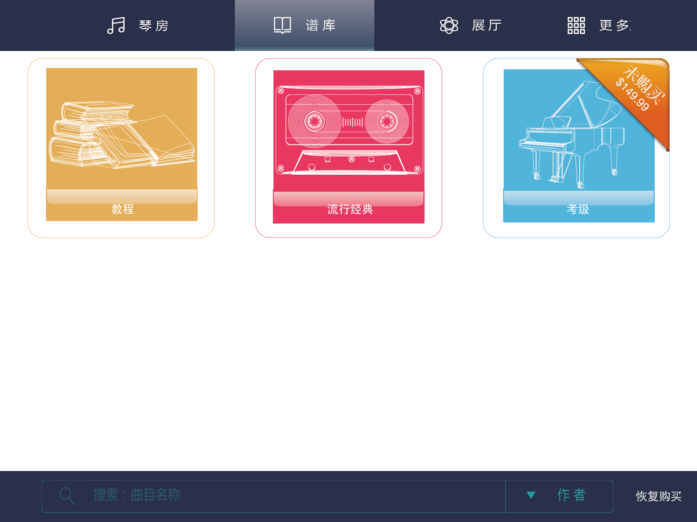
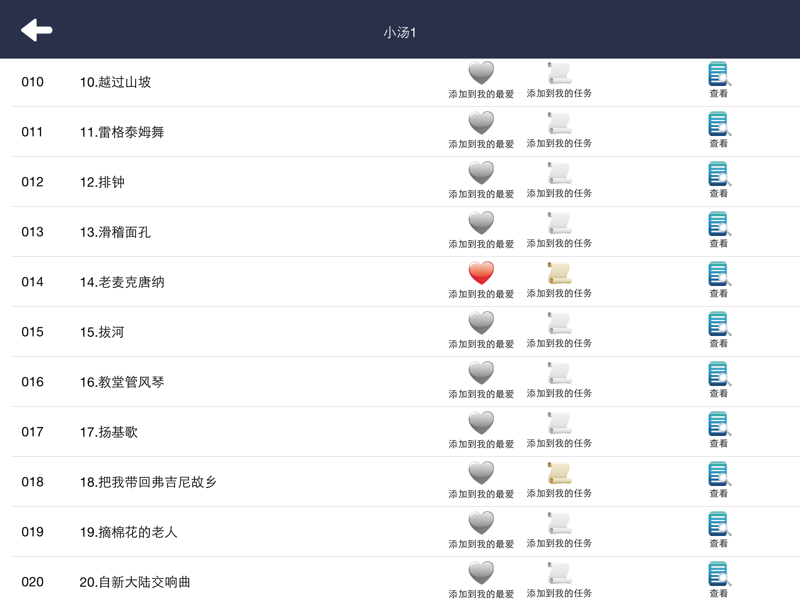
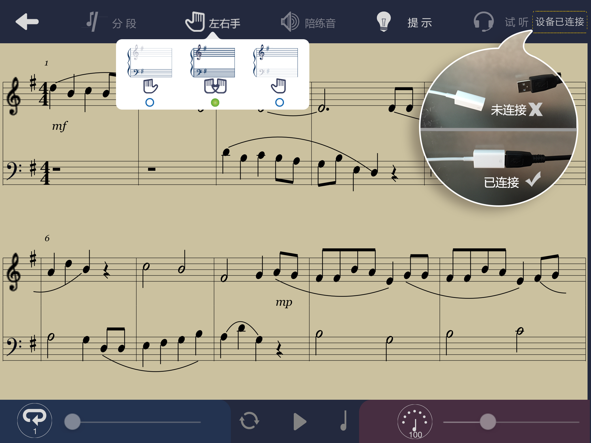
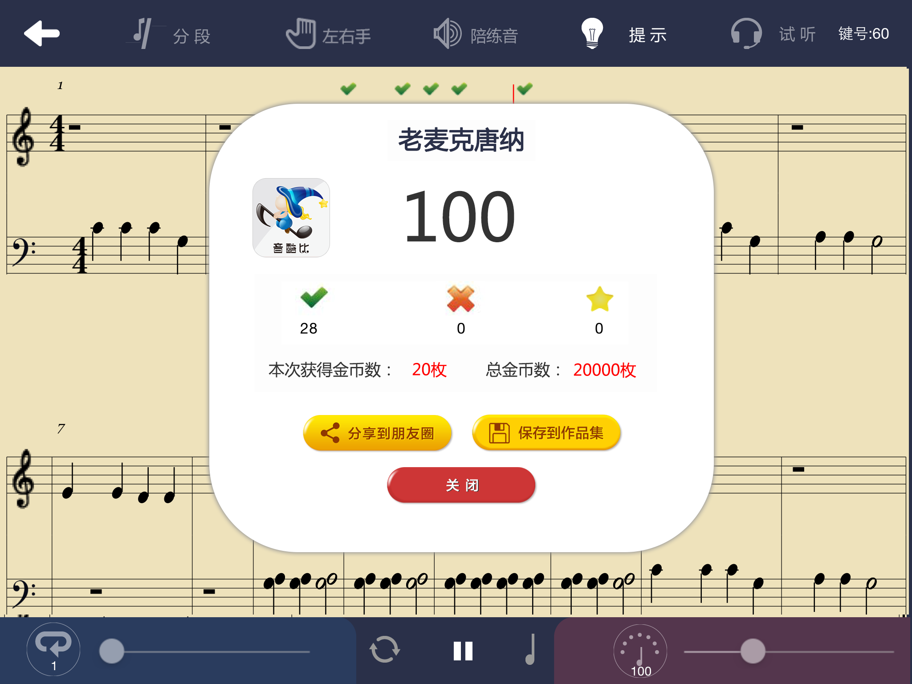
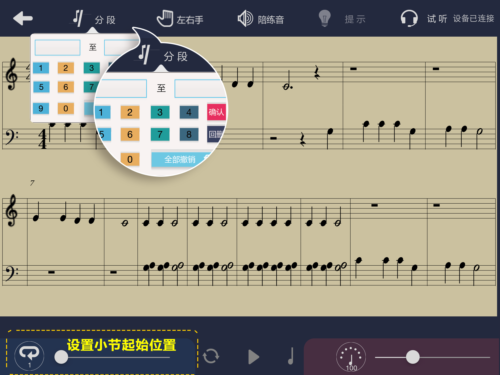

<!doctype html>
<html>
<head>
<meta http-equiv="Content-Type" content="text/html; charset=gbk" />
<title>HELP DOCUMENT</title>
<script type="text/javascript" src="images_about/jquery.js"></script>
<script type="text/javascript">
$(document).ready(function(){
	
	$(".accordion h3:first").addClass("active");
	$(".accordion p:not(:first)").hide();

	$(".accordion h3").click(function(){
		$(this).next("p").slideToggle("slow")
		.siblings("p:visible").slideUp("slow");
		$(this).toggleClass("active");
		$(this).siblings("h3").removeClass("active");
	});

});
</script>
<style type="text/css">
/*********************************** 折叠样式*********************************/  
.accordion {
	padding: 10px;
	width: 98%;
}
.accordion h3 {
	background: #cc3366 url(images_about/arrow-square.png) no-repeat right -51px;
	color: #fff;
	padding: 7px 15px;
	margin: 0;
	font: bold 75%/100% Arial, Helvetica, sans-serif;
	border: solid 1px #fff;
	border-bottom: none;
	cursor: pointer;
	text-align: left;
}
.accordion h3:hover {
	background-color: #c62f53;
}
.accordion h3.active {
	background-position: right 5px;
}
.accordion p {
	background: #f7f7f7;
	font: bold 75%/150% Arial, Helvetica, sans-serif;
	color:#666;
	margin: 0;
	padding: 15px 0px 25px 10px ;
	border-left: solid 1px #fff;
	border-right: solid 1px #fff;
	height:300px;
	overflow:auto;
	overflow-x:hidden;
}
/*********************************** 以下是圆角边框样式*********************************/  
.align-center {
	margin: 0 auto;      /* 居中 这个是必须的，，其它的属性非必须 */
	width: 80%;        /* 给个宽度 顶到浏览器的两边就看不出居中效果了 */
	text-align: center;  /* 文字等内容居中 */
}
.one {
	display: block;
	overflow: hidden;
	height: 1px;
	margin: 0 4px;
	border-left: 1px solid #CC3366;
	border-right: 1px solid #CC3366;
	background: #CC3366;
}
.two {
	display: block;
	overflow: hidden;
	height: 1px;/*线的高度为1px*/
	margin: 0 3px;/*距离外层DIV的左右边距各3px*/
	border-left: 1px solid #CC3366;/*只显示线的左边的1px*/
	border-right: 1px solid #CC3366;/*只显示线的右边的1px*/
	background: #CC3366;/*配合内层Div的颜色变化，*/
}
.three {
	display: block;
	overflow: hidden;
	height: 1px;
	margin: 0 2px;
	border-left: 1px solid #CC3366;
	border-right: 1px solid #CC3366;
	background: #FFCCCC;
}
.four {
	display: block;
	overflow: hidden;
	height: 1px;
	margin: 0 1px;
	border-left: 1px solid #CC3366;
	border-right: 1px solid #CC3366;
	background: #FFCCCC;
}
.rou/*DIV只显示左右的边框，颜色和p标签的一致*/ {
	border-left: 1px solid #CC3366;
	border-right: 1px solid #CC3366;
	text-align: center;
}
.roufooter/*DIV只显示左右的边框，颜色和p标签的一致*/ {
}
.rou2 {
	border-left: 1px solid #CC3366;
	border-right: 1px solid #CC3366;
	text-align: center;
}
/*********************************** 内容对象样式*********************************/  
.right20_32 {
	padding-right: 20px;
	width:45%;
}
.right10_32 {
	padding-right: 10px;
	width:32%;
}
.right8_24 {
	padding-right:8px;
	width:24%;
}
.span_31 {
 	text-align:justify; 
	 float:left;
 	 width:31%;
}
.spn31_align {
	padding-left:20px; 
	margin-top:-20px;
	
	}
/************************************************/
.span_24 {
 	text-align:justify; 
	 float:left;
 	 width:24%;
}
.spn24_align {
	padding-left:10px; 
	
	}
</style>
</head>

<body>
<div style="width:850px;" class="align-center"> 
  <!--<p class="one"></p>-->
  <p class="two"></p>
  <p class="three"></p>
  <p class="four"></p>
  <div class="rou2"  style="padding-top:15px"> <span style=" font: bold 130%/100% Arial, Helvetica, sans-serif; color:#cc3366"> 帮助说明</span> </div>
  <div class="rou2"> <!--折叠样式-->
    <div class="accordion">
      <h3>1、如何选择曲谱进行演奏？</h3>
      <p> 
        <br>
        <span  class="span_31" >第一步:<br>
        打开&ldquo;钢琴伴侣&rdquo;软件，登录后点击界面上方&lsquo;谱库&rsquo;菜单进入谱库界面（如图所示）。</span><span class="span_31 spn31_align" ><br />
        第二步:<br>
        在&lsquo;谱库&rsquo;菜单中有三种类别分别是：教程、考级和流行经典。可根据个人喜好选择类别，在对应类别中选择曲谱点击&lsquo;添加到我的最爱&rsquo;或&lsquo;添加到我的任务&rsquo;。</span><span class="span_31 spn31_align" ><br />
        第三步:<br>
        返回到主界面，点击&ldquo;琴房&rdquo;菜单，在 全部、任务和喜爱 三个标签中可根据你选择类别找到曲谱进行练习。</span> </p>
      
      <h3>2、如何进行识谱模式练习？</h3>
      <p>
      
        <span class="span_24"  >第一步:<br>
        选择曲谱后点击&ldquo;琴房&rdquo;菜单，最下方有两种选择：识谱模式和跟弹模式。单击&lsquo;识谱模式&rsquo;，按钮下方出现白色光条代表选中状态。</span><span  class="span_24 spn24_align" >第二步:<br>
        识谱模式下，练习曲谱进入如图所示界面。练习前请先单击&lsquo;左右手&rsquo;菜单进行手型选择(左手、右手或双手)。并注意查看菜单右上方设备连接状态。如果显示未连接，请按如图所示进行拔插。</span><span  class="span_24 spn24_align" >
        第三步:<br>
        识谱练习中，如果不知道要弹音符的位置请点击菜单中的&lsquo;提示&rsquo;按钮。这时，钢琴上的硬件设备对应的键盘指示灯会亮一秒。</span><span  class="span_24 spn24_align" >
        第四步:<br>
        练习结束后，系统会弹出评分界面。对此次练习进行评定。并有辅助功能进行保存和分享，从而帮助您对音符的识别。再弹一次 请按&lsquo;播放&rsquo;键。</span></p>
      <h3>3、如何进行跟弹模式练习？</h3>
      <p>
      
      <span class="span_24"  >第一步:<br>
        选择曲谱后点击&ldquo;琴房&rdquo;菜单，最下方有两种选择：识谱模式和跟弹模式。单击&lsquo;跟弹模式&rsquo;，按钮下方出现白色光条代表选中状态。</span><span  class="span_24 spn24_align" >第二步:<br>
        &lsquo;陪练音&rsquo;按钮中有两种设置：陪练音和节拍音，可根据需要关闭对应的辅助音效。在弹奏中如果想调节节拍速度，可通过调节界面右下方的深红色区域中的滑块来设置曲谱音乐的速度，向右为加快反之为减速。</span><span  class="span_24 spn24_align" >
        第三步:<br>
        对于曲谱中需要反复练习的部分可通过界面左上方&lsquo;分段&rsquo;按钮设置曲谱练习的位置。也可通过界面左下方区域中的滑块调整到想要练习的位置。</span><span  class="span_24 spn24_align" >
        第四步:<br>
        练习结束后，系统会弹出评分界面。对此次练习进行评定。并有辅助功能进行保存和分享。再弹一次请 按&lsquo;播放&rsquo;键。</span></p>
      <h3>4、展厅功能介绍？</h3>
      <p>
      
      <span>好友管理、搜索账号、添加好友:<br>
      &ldquo;展厅&rdquo;菜单下 ，选择&lsquo;好友管理&rsquo;可进行好友的查看和添加 。<br>
方法：展厅&mdash;&mdash;好友管理&mdash;&mdash;</span>搜索帐号（例如添加好友名：&lsquo;cici&rsquo;）／推荐的关注人（例如添加好友名：&lsquo;cici&rsquo;）&mdash;&mdash;&lsquo;选中好友&rsquo;&mdash;&mdash;添加好友</p>
      <h3>5、常见问题答疑？</h3>
      <p> 
      
      </p>
    </div>
    <!--<p class="two"></p>--> 
  </div>
  <div class="rou" style="font: bold 65%/120% Arial, Helvetica, sans-serif; color:#cc3366"> <br>
    大连佳音科技有限公司<br>
    E_mail:liuzaixin@jiayinqiji.com &nbsp; wwww.jiayinqiji.com<br>
    <br>
  </div>
  <div class="rou"></div>
  <p class="four"></p>
  <p class="three"></p>
  <p class="two"></p>
  <!--<p class="three"></p>--> 
</div>
</body>
</html>